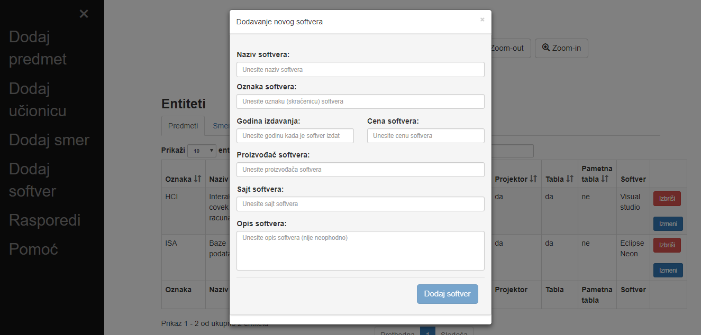
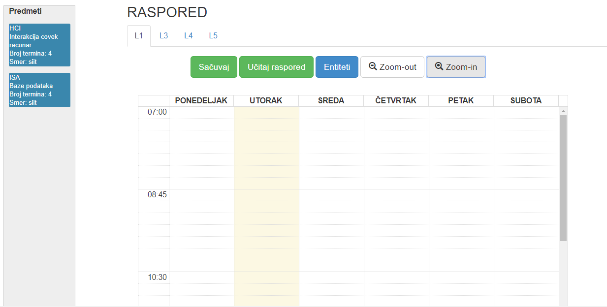

Šta predstavlja ova aplikacija? Kome je namenjena?
Funkcionalnosti aplikacije
Smernice korišćenja aplikacije
Prečice
Šta predstavlja ova aplikacija? Kome je namenjena?
Ovo je aplikacija za vođenje evidencije o rasporedu predmeta u računarskom centru, namenjena administratorima studentske
službe koji su zaduženi za formiranje rasporeda. Raspored se pravi za svaki kabinet, popunjavajući satnicu predmetima
koje sadrži svaki smer.
Funkcionalnosti aplikacije
- Aplikacija sadrži mogućnost dodavanja novih entiteta. Entitet može biti smer, učionica, predmet, softver.
- Dodate entitete je moguće pregledati sa svim njihovim osobinama.
Moguće ih je pretraživati po nekom od naziva atributa ili ih sortirati po određenom atributu. - Mogući su zoom in i zoom out.
- Aplikacija sadrži kalendar koji je vezan za svaku od učionica. Iz liste predmeta moguće je drag&drop metodom
popunjavati rasporede.
Takođe je iz rasporeda moguće vratiti predmet u listu svih predmeta. - Moguce je čuvanje rasporeda i ponovno učitavanje, kao i nemogućnost dadavanja nekih predmeta u raspored učionice koja ne zadovoljava zahteve predmeta ili vremensko ograničenje.
Smernice korišćenja aplikacije
Na početnoj stranici prikazan je tabelarni prikaz entiteta sa svim njihovim podacima. Možete pretraživati po svim atributima, sortirati i izabrati koliko entiteta želite da vidite u tabeli.Takođe se nalaze i prečice u vidu dugmića za otvaranje rasporeda i zoom in/zoom out.

Dugme Meni otvara navigacioni meni sa leve strane, na kome možete videti opcije za dodavanje, prikaz entiteta, uvećanje
i umanjenje sadržaja na ekranu, kao i opcija za prikaz i mogućnost formiranja rasporeda.
Ako želite da dodate bilo koji entitet, klikom na neku od opcija za dodavanje, prikazaće vam se novi modalni prozor sa
formom za dodavanje, na kojoj se nalaze dodatna
uputstva o poljima koje treba popuniti.

Otvaranjem rasporeda, možete videti
listu svih predmeta, spisak učionica koje su raspoređene po tabovima, gde svaki tab sadrži raspored za tu učionicu
u vidu kalendara.
Predmeti su predstavljeni karticama, levim klikom miša na karticu i prevlačenjem, predmet se, ako učionica zadovoljava uslove predmeta,
prebacuje u raspored te učionice. Svaki predmet sadrži onoliko kartica koliko ima nedeljnih
termina. Kako se jedan termin predmeta prevuče u raspored, u predmetu se smanjuje broj termina.
Svaki termin se može iz rasporeda vratiti nazad u listu svih predmeta.

Levim klikom na dugme Sačuvaj raspored se može sačuvati i nekom drugom prilikom, levim klikom na dugme Učitaj ponovo
učitati i po potrebi menjati.
Klikom na dugme Entiteti možete se vratiti na početnu stranicu koja sadrži tabelu entiteta i meni.
Prečice
Prečice su različite, u zavisnosti od toga da li ste nalazite na početnoj stranici (tabela entiteta) ili na stranici sa rasporedom. Na početnoj stranici, omogućene su sledeće prečice:- CTRL + Q - Otvaranje dijaloga za dodavanje predmeta
- CTRL + W - Otvaranje dijaloga za dodavanje učionice
- CTRL + E - Otvaranje dijaloga za dodavanje smera
- CTRL + R - Otvaranje dijaloga za dodavanje softvera
- CTRL + Y - Odlazak na stranicu sa rasporedom
- F2 - Odlazak na stranicu Pomoć
Na stranici sa rasporedom, omogućene su sledeće prečice:
- CTRL + S - Sačuvaj raspored
- CTRL + U - Učitaj raspored
- CTRL + E - Odlazak na početnu stranicu (tabela entiteta)
- F2 - Odlazak na stranicu Pomoć